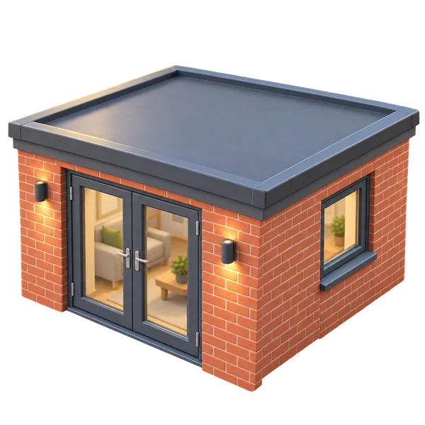

Services
Everything we can sort for you.
Each job has its own page with what's included, guide prices and answers to the usual questions.
 Roof repairs
Roof repairsSlipped slates, broken tiles, leaks and storm damage, found and fixed properly.
from £160 Roof replacement
Roof replacementStrip and re-roof in slate or tile, on new battens, membrane and mechanically fixed ridges.
from £95/m²
Flat roofsEPDM, GRP or torch-on felt on a new deck with proper falls and insulation.
from £40/m² Chimney repairs
Chimney repairsRepointing, flaunching, lead flashings, caps and stack removal.
from £480 Fascias, soffits and guttering
Fascias, soffits and gutteringFull roofline replacement in uPVC, with rotten timber removed and gutters that cope.
from £60/m Ridge and verge repairs
Ridge and verge repairsRebed or upgrade to mechanically fixed dry ridge and dry verge systems.
from £32/m